創建 Hexo blog 與部署到 github
使用 hexo 套件的先前準備條件是要先安裝好 Node.js、Git，接下來才安裝 hexo 套件。
一、安裝 hexo 套件
先新創一個資料夾，然後把 hexo 套件安裝在裡面，指令如下
$ npm install hexo-cli --save
也等於
$ npm install hexo-cli
安裝完後，在「Hexo」資料夾內可以發現多了些檔案
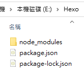
二、創立 blog
於「hexo」資料夾下額外創一個名為「tecblog」資料夾，(雖然不需要特別在「Hexo」資料夾底下，
但個人建議「tecblog」資料夾還是要安裝在「Hexo」資料夾底下，日後專案在移動時，可一併打包帶走。)
於「hexo」資料夾下打如下指令，利用 hexo 套件把 blog 框架安裝到「tecblog」資料夾
$ npx hexo init tecblog
完成後資料的檔案結構如下
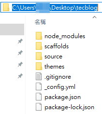
三、部署到 github
先在你的 github 新增一個 repository，此例的名稱為「tecblogs」
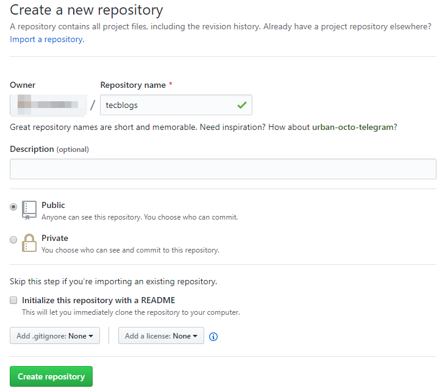
在你之前所創的「tecblog」資料夾內，找一個 _config.yml 的檔案，
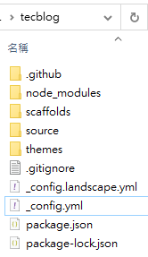
於 _config.yml 檔案裡找到 url、root 屬性，分別填入你的 GitPages 主帳號網址與 repository name
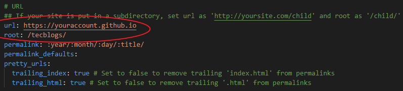
url 屬性是你的 GitPages 主帳號網址，例如：https://youraccount.github.io
url 屬性會影響到「相對位址」的指定、而 root 屬性則為你的 repository name
選擇把 blog 檔案要部到哪個 git repository，
於 _config.yml 檔案裡的最底下找到 deploy 屬性並填入如下
deploy:
type: git
repository: http://github.com/youraccount/tecblogs.git
branch: master
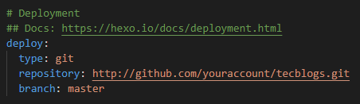
開始部署上 GitHub
1、先把「tecblog」資料夾裡先前所生成的 public 資料夾與 db.json 檔案刪掉(如果有的話)
$ npx hexo clean
2、將 md 檔轉生成 html
$ npx hexo g
此時多了 public 資料夾、db.json 兩檔案
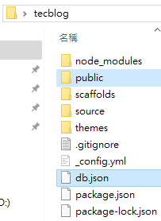
3、部署
$ npx hexo d
在部署時，期間還會生成 「.deploy_git」 資料夾
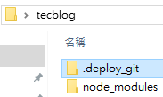
當發生「Deployer not found」問題時，
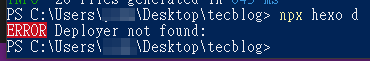
請在「tecblog」資料夾內安裝
$ npm install hexo-deployer-git --save
然後再次部署上 GitHub
如果又失敗的話，可能會出現以下錯誤
hexo : 無法加載文件 …AppData\Roaming\npm\hexo.ps1，因為在此系統上禁止運行腳本。
有關詳細信息，請參閱 https://go.microsoft.com/fwlink/?LinkID=135170 中的 about_Execution_Policies。
原因是PowerShell默認禁止在系統上運行腳本，需要首先使用管理員權限運行PowerShell，然後輸入以下代碼進行修改：
$ set-ExecutionPolicy RemoteSigned
然後選擇 Yes
部署好之後，可能需要等 5 ~ 10 分鐘才能成功看到更新畫面，
如果還是沒有畫面的話，請至該 repository 的 setting 頁面裡的去把 GitHub Pages 開啟來。
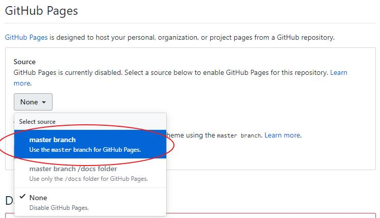
成功的預設畫面如下
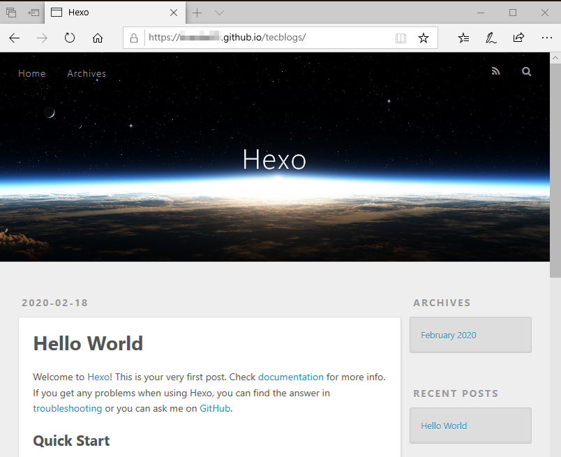
參考資料：
PowerShell - 解決 “.ps1 檔案無法載入，因為這個系統上已停用指令碼執行。” 問題